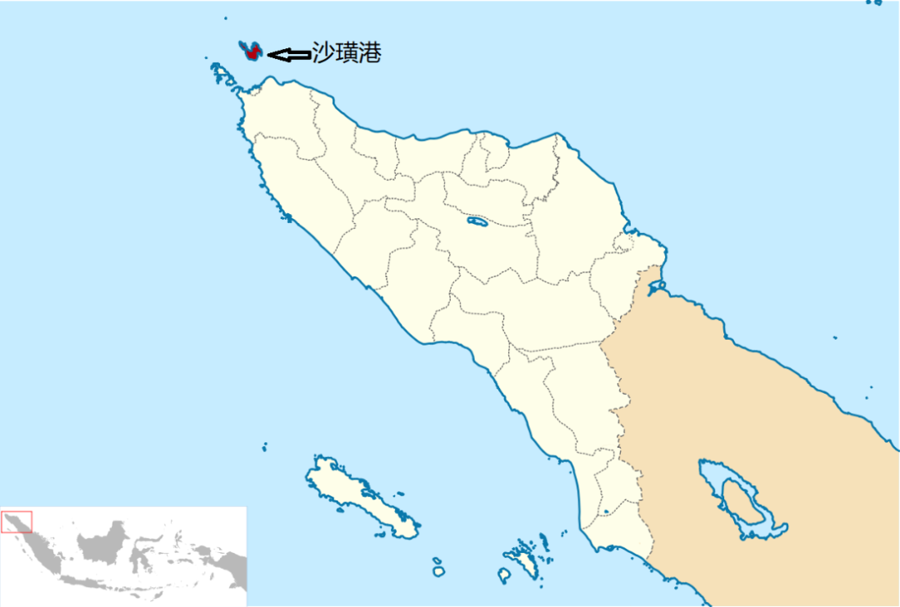
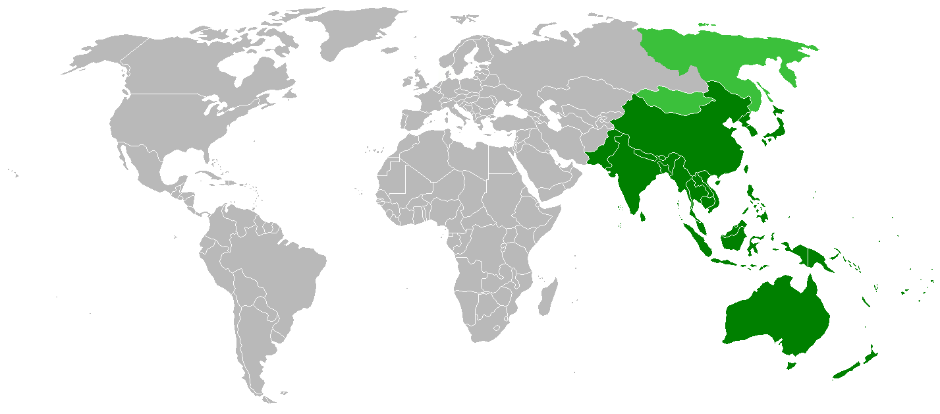

收录于合集

作品简介
【作者】 Dewi Fortuna Anwar，印尼国家科学院政治研究中心研究教授，印尼哈比比研究中心人权与民主协会主席，南洋理工大学拉惹勒南国际研究院访问学者。其主要研究方向为印尼对外政策、印尼民主化以及东盟区域政治及安全。
【编译】 杨沛鑫（国政学人编译员，人民大学国际政治系研究生）
【校对】 邵良
【审核】 戴赟
【排版】 王欣月
【美编 】黄竹音
【来源】 Anwar, Dewi Fortuna. “Indonesia and the ASEAN outlook on the Indo- Pacific.” International Affairs 96.1 (2020): 111-129.
期刊简介
国际事务（ International Affairs ），是国际关系领域的一流学术期刊，由伦敦皇家国际事务研究所查塔姆学院(Chatham House)于1992年创刊，其内容来源广泛，对国际政治有独到的分析。2019年该刊影响因子为3.705，在95种国际关系期刊中排名第3。
印度尼西亚与东盟印太展望
Indonesia and the ASEAN outlook on the Indo-Pacific
Dewi Fortuna Anwar
内容提要
本文中，作者借鉴了de Swielande的观点，从温特（Alexander Wendt）的三种“无政府文化”出发，使用了一个 中等国家的分析概念 ，用以研究印尼针对“印太”（Indo-Pacific）概念所制定的系统性对外政策以及其在《东盟印太展望》（the ASEAN outlook on the Indo-Pacific）的制定中所发挥的作用。作者认为，印尼在面对“印太”这一地缘概念时保持了其一贯的态度，并采取了 更加积极独立的对外政策方针 ，强调发展自身的海洋力量，使自己成为一个真正的群岛国家。但在另一方面，印尼在推动《东盟印太展望》建立的过程中扮演的是 “康德式中等国家” （Kantian middle powers）的角色，其更注重区域内的合作和对话，从而加强了东盟在印太地区面对域外大国竞争时的 中心性 （centrality）角色。对于东盟的领导人来说，如何在区域范围转变的同时制定与之相匹配的战略以保持区域合作是重中之重。而在未来，印尼通过发挥其中等国家的作用，可以有效地促进东盟在印太区域的中心性建构。
01
中等国家与“印太区域博弈”：
经验研究和理论回顾
2019年6月23日，经过18个月的沟通与磋商，东盟领导人在第34届东盟峰会上正式提出了《东盟印太展望》，这实际上是建立在东盟框架下的一个促进地区合作和对话的机制，并且会将不同国家现已推行的“印太战略”整合在东盟的平台下。有关“印太”这一概念的讨论可以向前追溯到2007年日本首相安倍晋三在印度的演讲；随后，澳大利亚、印尼等国家也相继提出了自身的印太构想。
在近年来，关于印太地区的研究更多是受到印度和中国崛起的影响，与此同时，印太地区存在的非传统安全问题以及大国博弈，这也越来越明显的影响到域内国家的决策。以印尼为首的东盟开始仔细考量中国的快速崛起所带来的地缘政治变化：以一带一路为媒介，中国在印太地区越来越积极进取。但在一些人看来，这挑战了美国在该地区所维持的地缘政治秩序。针对中国的崛起，美国也制定了相应的政策，包括重新启动美日印澳的“四方安全会谈”（Quadrilateral Security Dialogue）来制衡中国的发展。但 从东盟的角度来看，其并不想在大国博弈之间选边站队，而是想将各个大国包容进以东盟为主导的多边地区秩序中，促进地区合作 。通过建立东盟主导的东亚峰会、东盟地区论坛以及东盟防长会议等磋商机制，在大国博弈的背景之下遏制住自身的边缘化趋势。作为东盟的领导国家，印尼也提出了自己的印太构想，并将其融入到佐科维总统提出的 “全球海洋支点” 战略（Global Maritime Fulcrum，简称GMF）中，意图在两洋交汇的过程中发展自己的海洋力量，并实现自己成为强国的愿望。但在中美博弈的大背景之下，印尼实际上已经成为一个中等国家，其在印太地区的利益范围也需要重新界定，这些事实都推动着印尼制定相应的外交政策。
因此，本文实际上是对印尼作为一个中等国家所制定的印太政策做研究：在有关印尼对外政策制定的问题上，作者引入Roberts和Sebastian的观点。他们认为，无论印尼如何发展，他都会逐渐谋求区域的领导权。关键的问题在于印尼会选择怎样的路线：是选择继续强化其在东盟内部的领导地位，还是选择更加积极独立的政策。而 在有关中等国家地位的讨论上，作者借鉴了de Swielande的观点。她从温特的三种无政府文化出发，对中等强国的种类做了研究：第一种是霍布斯式中等国家 。其将地区秩序视为一种无政府状态，用权力政治来贯彻自身的政策制定过程，并将国家利益限定在较为狭窄的范围内。 第二种是洛克式的中等国家。 相比霍布斯式的中等国家来说，这类国家将地区秩序看作是高级政治和低级政治的混合，并且较为关注经济和其他物质利益。 第三类是康德式的中等国家。 这类国家对地区秩序较为乐观，强调低级政治的重要性，乐于与其他国家沟通合作。综合了上述学者的观点之后，作者从历史出发，说明了印尼的“印太转向”实际上与其海洋战略息息相关，并通过奉行更加独立自主的具体对外政策来促进其海洋战略的实现，响应域内国家提出的印太政策。与此同时，印尼还积极参与东盟的印太构想构建，在保证自身发展的同时促进东盟的主体性建构，充分发挥自身的中等国家作用。
02
印尼独立自主的海洋政策：
历史与现实
印尼对印太的政策转向与佐科维总统提出的全球海洋支点战略是密不可分的。 作为世界上最大的群岛国家，印尼一直将自身的领土与海洋联系在一起。在独立之初，由于印尼所控制的群岛被公海所分割，其领土主权极易受到外部船只的威胁。因此，印尼独立的前三十年，寻求国际社会的认同一直处在印尼外交的最高优先级。虽然在苏哈托的新秩序时期，印尼的战略焦点更多转向陆上稳定，忽视了海洋发展，但在民主化改革之后，印尼政府加大了在海洋力量建构上的投入，包括苏西洛在内的历任总统都关注海洋力量的构建。佐科维时期的印尼政府对海洋力量的关注到达了顶峰。他推出了全球海洋支点战略，强调实现五个部分的政策内容：（1）重建印尼海洋文化；（2）开发印尼海洋资源；（3）发展印尼海洋基建；（4）强化印尼海上力量；（5）推动印尼海洋外交。在2014年的第32号国家法中，佐科维进一步推动了印尼海洋政策的实行，这与其全球海洋支点战略相辅相成，目的是使得印尼成为一个独立、强大的海洋群岛国家。印尼在其海洋政策中强调，在保证国家利益以及地区和平的基础上，印尼应该积极参与这些国家提出的地缘经济合作构想，与中国、印度、日本以及美国进一步发展友好关系。但是这种合作是有限度的，印尼不允许自身太依附于印太区域内的大国。域内大国在经济事宜上的过分介入也会引起印尼的消极反应。在这个方面，印尼乐于看到数个大国之间的竞争，与此同时与这些国家进行多双边的合作并从中获益。例如，印尼与中国在瓜拉丹戎岛的建设项目上达成一致，并与日本在西爪哇的Patimban港上进行合作。在沙璜的港口项目上，印尼与印度也进行了深入的交流。

图1.沙璜港的地理位置
以上措施都体现了印尼在海洋战略上的独立自主原则。 其欢迎域外大国加入到印太海洋区域的事务处理中，但又保留了自身在这些事务中的主导权。从印尼的角度来看，与所有域内大国发展良好的关系不仅是出于经济原因，更是因为其意图独立自主地处理域内事务。这种战略目标在东盟印太展望当中得到了体现，并成为了建构印太合作的重要基石。
03
印尼与东盟印太展望：
一个中等国家的参与

作为一个中等国家，印尼在东盟内部的领导主要是为了促进区域内合作、调和区域内矛盾以及管理东盟与域外大国的关系，这被视为一个中等国家的模范功能。从苏西洛到佐科维，印尼的对外政策风格发生了巨大改变，从外向型的政策改变到了更加注重国家发展的政策。佐科维时期更注重双边关系的发展，并将视野从东盟转移到印太地区。部分学者认为这宣示了东盟与印尼的割裂，但实际上随着印太概念的不断成熟，印尼的“印太构想”实际上振兴了印尼与东盟之间的合作。 如前文所言，印尼在推动《东盟印太展望》的过程中实际上扮演了康德式中等国家的角色，不断致力于推动印尼所在区域的合作，而不是简单地出于传统的军事或地缘经济考量。
在印尼总统和外长的设计中，印尼应该将东南亚国家整合起来，共同推进东盟的印太展望：印尼和东盟要努力建构由自身主导的区域秩序，使印尼为主的东盟在区域事务中发挥中心作用。而为了应对区域内外对东盟中心性的挑战，印尼外长蕾特诺在演讲中表示印尼和其他东南亚国家应该成为印度地区的主要行为体。2018年4月28日，佐科维在第32届东盟峰会上重申了东盟中心的重要性。在2018年6月2日的香格里拉对话上，印尼防长也号召建立印太区域安全机制，以针对日渐猖獗的恐怖主义。经过激烈的讨论，印尼外交部推动了有关《东盟印太展望》的草案文件，强调开放、包容、透明和东盟中心性。这版草案突出了各方面的合作：（1）创建一个和平、稳定、繁荣的区域环境（2）共同解决包括非传统安全在内的安全挑战（3）促进区域经济合作。除此之外，印尼还积极推动印太地区的高质量对话。通过这些措施，东盟最终在2019年六月通过了《东盟印太展望》。正式承认了印尼的中等强国地位，并赋予了其在议程设置等方面的相关权力。
04
结论
印尼推动东盟印太展望的建立是出于三个方面的考量：第一、强化印尼在东盟内部的领导地位；第二、强化东盟在区域议程中的中心性；第三、抵消大国博弈对印尼的冲击。因此，《东盟印太展望》主要体现出四个方面的要素：第一，促使东盟为中心的印太区域紧密连接；第二，强调印太区域性质的合作而不是对立；第三，促进区域成员的全面发展；第四，认识到海洋在地区架构设计中的重要性。但是《东盟印太展望》是否能够落到实处？质疑的声音认为东盟松散的组织架构和低下的决策效率都会影响《东盟印太展望》的实现。
作者认为， 一个学者所切入的理论角度决定了他如何看待东盟印太展望 。在阿查亚（Amitav Acharya）这样的建构主义者看来，东盟的努力在很大程度上促进了区域的合作与和平。但在现实主义者看来，东盟的很多倡议都是难以实现的。因此 在作者看来，对于东盟的领导人来说，如何在区域范围转变的同时制定与之相匹配的战略以保持区域合作是重中之重。而印尼通过发挥其中等国家的作用，可以有效地促进东盟在印太区域的中心性建构。
译者评述
2017年底，特朗普政府在《国防战略报告》中正式提出“印太”概念，并针对中国制定了一套系统性的印太战略，意图强化美国在印太地区的存在，并遏制中国的崛起。[1]在此之后，国际关系学界有关印太地区的讨论愈发激烈。大量学者将研究视阈放到了印太地区的大国竞争上，强调中国与美国越发激烈的战略竞争，强调美国在印太地区意图建立的辐轴式联盟体系，强调美日印澳四国在印太地区所共同推行的印太战略。[2]
但是，学界目前还没有对印太地区的主要行为体——东盟及其领导者印尼的“印太政策”进行集中的研究。现有研究更多将印尼以及《东盟印太展望》看作是被动的政策反应，即结构压力的产物。而本文将印尼作为一个主要的切入口，通过研究《东盟印太展望》背后印尼的战略目的，说明了印尼作为一个中等国家在应对大国战略竞争压力时的政策应对和路径选择。其创新之处在于，作者选择了一个相对特殊的传导路径，将印尼赋予了中等国家的身份，并将其对“印太战略”的反应与印尼的海洋战略目标相联系。这说明了印尼实际上是出于保护自身主体性的目标，主动制定了与“印太战略”相呼应的“印太政策”。或者说，如果将东盟视为一个可以与中国、美国相并列的独立行为体的话，印尼以及《东盟印太展望》的推行，存在非常显著的第二意象影响要素。这一出发点是对现有的研究较为充分的补充，也为之后的研究提供了一条相对新颖的路径。
但译者认为，本文的一个问题在于，其参考温特“三种无政府文化”所使用的“中等国家模型”并没有得到很好的解释和运用。虽然在理论叙述的部分中，作者分别阐述了霍布斯式中等国家、洛克式中等国家和康德式中等国家的特点，但是在使用这一概念进行实证研究的过程中，作者并没有将理论真正的运用起来。在第三部分，作者只是在该部分最后点出“作为一个康德式中等国家，印尼在《东盟印太展望》形成的过程中致力于推动所在区域的合作。”因此，本文对于中等国家这一概念的叙述会给读者以“脱节”之感。译者的另一个问题在于，本文在结论中认为：印尼可以在维持东盟及自身本体性安全以及印太事务主体性中发挥更大的作用。换言之，印尼仍然可以采取“对冲”（hedging）的策略平衡大国博弈的影响。但是随着中美博弈烈度的不断上升，特别是随着印太地区美国轴辐联盟体系的进一步建立，印尼是否还有对冲的空间仍待观察；印尼以及东盟在处理本地区事务中是否还能采取大国平衡战略，维持其影响力，也有待思考。可以说，目前对于印尼以及东盟在印太区域内的战略研究还有可以观察和继续研究的空间。
因此，本文使用过程追踪的方法研究了印尼的海洋战略雄心，对其在印太区域的政策制定进行了良好的实证研究，但是在理论切口方面仍然有继续发展的空间。从更大的角度来看，针对中等国家研究其对外政策制定的模式，建立一个系统性的模型来解释大国战略竞争背景之下的中等国家对外政策制定，是一个可以尝试的方向。
参考文献
[1] Harding, Brian. “The Trump Administration’s Free and Open Indo-Pacific Approach.” Southeast Asian Affairs 2019.1 (2019): 61-67.
[2] Shambaugh, David. “US-China Rivalry in Southeast Asia: Power Shift or Competitive Coexistence?.” International Security 42.04 (2018): 85-127. Thankachan, Shahana. “Japan’s “Free and Open Indo-Pacific Strategy”: Reality before the Rhetoric?.” Maritime Affairs: Journal of the National Maritime Foundation of India 13.2 (2017): 84-91.
文章观点不代表本平台观点，本平台评译分享的文章均出于专业学习之用, 不以任何盈利为目的，内容主要呈现对原文的介绍，原文内容请通过各高校购买的数据库自行下载
**
**
**
**
**
**
添加 “国小政”微信
获取最新资讯


国政学人
支持学术公益与知识传播
微信扫一扫赞赏作者 __赞赏
已喜欢，对作者说句悄悄话
取消 __
发送给作者
发送
最多40字，当前共字
上一页 1/3 下一页
长按二维码向我转账
支持学术公益与知识传播
受苹果公司新规定影响，微信 iOS 版的赞赏功能被关闭，可通过二维码转账支持公众号。